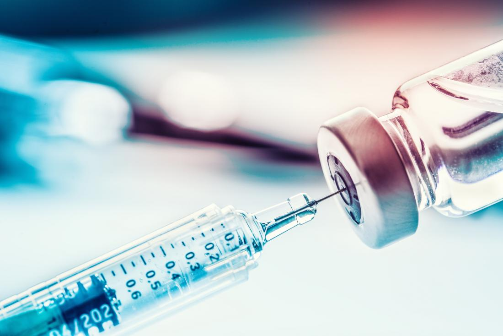

Vaccination
The Science Behind the Debate

What is a Vaccine?
A vaccine, or an inoculation, is a substance used to stimulate the production of antibodies in an organism in order to create
immunity to protect the human body from disease. The traditional vaccine consists of either parts of a microbe or a whole
microbe that has been either killed or weakened to the point of no longer being harmful to the host. Once the vaccine has entered the body,
(Usually through the bloodstream), the body quickly learns how to defend itself from that disease. If the disease were to try to infect that]
organism again, the body would now be able to defend itself. This gives the person who received the vaccine immunity towards that disease.
In simpler terms, the vaccine tricks the body into producing defenses against other dangerous diseases.

The History of the Inoculation
Edward Jenner is believed to be the founding father of vaccinology after he vaccinated a 13 year-old boy who
was infected with the vaccinia virus (cowpox) during the year 1796. However, the Chinese are thought to have been the first to experiment with
inoculation long before Edward Jenner. A Song dynasty (960–1279) chancellor of China, Wang Dan (957–1017), lost his eldest son to
smallpox and sought a means to spare the rest of his family from the disease, so he summoned physicians, wise men, and magicians
from all across the empire to convene at the capital in Kaifeng and share ideas on how to cure patients of it until a divine man
from Mount Emei carried out the world's first inoculation. Nowdays, vaccines have eradicated many harmfull diseases towards humans
such as smallpox and polio, which both terrorized the people of earth for centuries. Delivering vaccines is now a very common practice
by many doctors and pediatricians.

Edward Jenner, the founding father of the modern day vaccine.